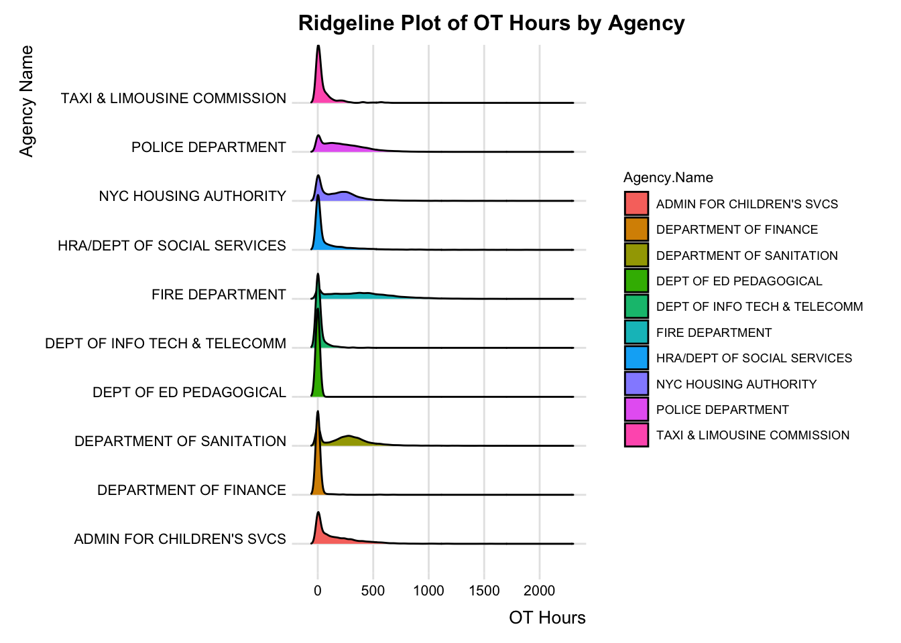
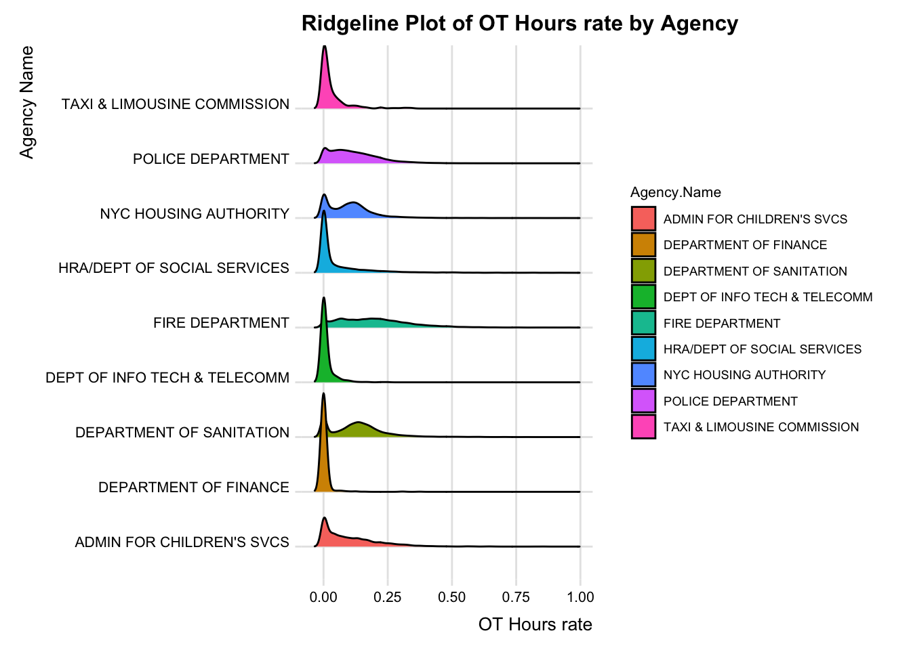
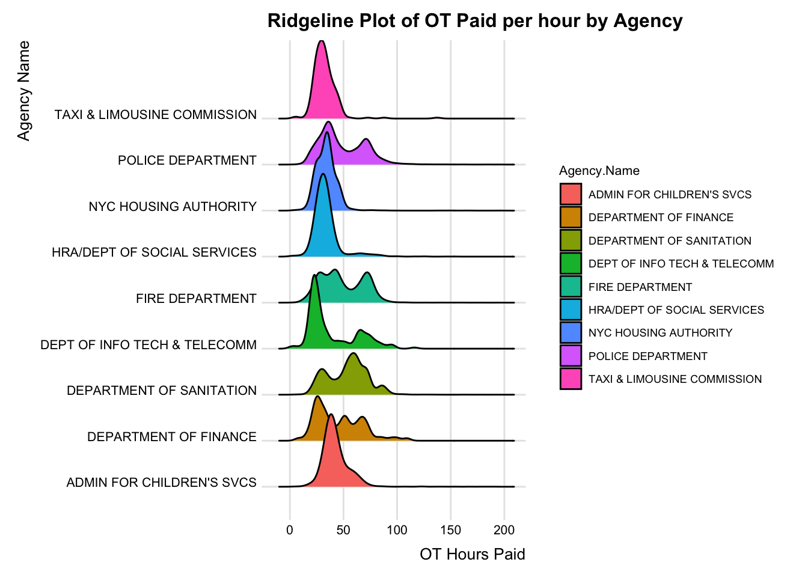

── Attaching core tidyverse packages ──────────────────────── tidyverse 2.0.0 ──
✔ dplyr 1.1.3 ✔ readr 2.1.4
✔ forcats 1.0.0 ✔ stringr 1.5.0
✔ ggplot2 3.4.4 ✔ tibble 3.2.1
✔ lubridate 1.9.2 ✔ tidyr 1.3.0
✔ purrr 1.0.2
── Conflicts ────────────────────────────────────────── tidyverse_conflicts() ──
✖ dplyr::filter() masks stats::filter()
✖ dplyr::lag() masks stats::lag()
ℹ Use the conflicted package (<http://conflicted.r-lib.org/>) to force all conflicts to become errors
Code
salary_df <-read.csv("Cleaned Dataset.csv")
Code
select_agency <- salary_df |>filter(Agency.Name ==c('DEPT OF ED PEDAGOGICAL','POLICE DEPARTMENT','FIRE DEPARTMENT','HRA/DEPT OF SOCIAL SERVICES','NYC HOUSING AUTHORITY','DEPARTMENT OF SANITATION',"ADMIN FOR CHILDREN'S SVCS",'DEPARTMENT OF FINANCE','DEPT OF INFO TECH & TELECOMM','TAXI & LIMOUSINE COMMISSION'))
Code
select_title <- select_agency |>filter(Title.Description %in%c("CHILD PROTECTIVE SPECIALIST","CHILD PROTECTIVE SPECIALIST SUPERVISOR","CITY TAX AUDITOR","CLERICAL ASSOCIATE","CALL CENTER REPRESENTATIVE","COMPUTER SPECIALIST","TAXI AND LIMOUSINE INSPECTOR","COMMUNITY ASSOCIATE","TEACHER","TEACHER SPECIAL EDUCATION","POLICE OFFICER","SCHOOL SAFETY AGENT","FIREFIGHTER","EMERGENCY MEDICAL SPECIALIST-EMT","ELIGIBILITY SPECIALIST","JOB OPPORTUNITY SPECIALIST","CARETAKER","MAINTENANCE WORKER","SANITATION WORKER","CITY SEASONAL AIDE"))
3.1 Correlation Heatmap Plot for Categorical Variables
We aim to explore the relationship between our target variable, salary, and several factors such as agency, job title, and agency size, among others. Given the mix of categorical and continuous variables, we employ two methods to assess correlations. Firstly, to analyze the correlation between categorical variables and salary, we utilize a heatmap. Specifically, we focus on the areas in the last three columns that lack any white sections, which would indicate a zero correlation. We notice that these columns, corresponding to agency name, job title, and work location, largely lack white areas. This observation leads us to conclude that there is a relationship between salary and these three categorical factors. Notably, the ‘salary low’ column features many red-like colors, suggesting a strong and positive correlation. The next two columns, representing ‘moderate salary’ and ‘very high salary’, appear to have a smaller impact on these factors, showing both weaker correlation and negative correlation. Therefore, our subsequent analysis will concentrate on examining the relationship between salary and these three categorical factors, in contrast to leave status and pay basis, which show weaker correlations.
Code
library(GGally)
Registered S3 method overwritten by 'GGally':
method from
+.gg ggplot2
Code
p <- salary_new[, c(2, 4:6, 8, 15)]library(ggcorrplot)model.matrix(~0+., data=p) %>%cor(use="pairwise.complete.obs") %>%ggcorrplot(show.diag=FALSE, type="lower", lab=FALSE, lab_size=2)+theme(axis.text.x =element_text(size =5), # Adjust size as needed for x axis labelsaxis.text.y =element_text(size =5))+labs(title ="Correlation Heatmap Plot for Categorical Variables")
3.2 Scattor Pair Plot for Continous Variables
Then, we aim to explore the correlation between salary and continuous variables. From the scatter pair plot, we observed that the correlation coefficients between salary and two factors—the size of the agency and the length of time since the agency was established—are 0.595 and 0.56, respectively. Consequently, we infer that there is a positive correlation between salary and these two factors. Although the relationship is not exceptionally strong, it is evident that both the size of the agency and its established duration have a certain degree of positive influence on salary.
3.3 Lollipop of Salary for Various Agencies and Job Titles
Next, we will analyze three factors that demonstrate a strong correlation with salary: agency, job title, and work location. Beginning with the factors of agency and job title, we found that among the ten agencies we examined, the Education Department has the highest average salary, followed by the Fire Department and Police Department. On the other hand, agencies like the Housing Authority, Department of Social Service, and Taxi & Limousine Commission are associated with lower average salaries.
Interestingly, despite initial expectations, the Tech & Telecommunications Department ranked lower in terms of average salary. However, when analyzing job titles, we discovered that Computer Specialist positions hold the highest average salary. This suggests that within the Tech & Telecommunications Department, there may be roles with comparatively lower salaries, such as those of Call Center Representatives, as indicated in the title analysis. In addition to Computer Specialists, other job titles with relatively high average salaries include Teachers, Special Education Teachers, and Child Protective Specialists. This aligns with our earlier findings, given that the Education Department has the highest average salary. Conversely, positions like City Seasonal Aide and Caretaker are associated with lower salaries, mirroring the trend observed in the lower-paying agencies.
Code
library(gridExtra)
Attaching package: 'gridExtra'
The following object is masked from 'package:dplyr':
combine
Secondly, we analyzed the impact of work location on salary. We utilized both a map and a bubble plot to illustrate the distribution of average salaries across New York City. In the map, lighter shades indicate higher salaries. Our findings show that Manhattan has the highest average annual salary at 80,000 dollars. This figure might seem modest, considering that the ten agencies we selected primarily consist of essential yet typically lower-wage agencies. Richmond follows with an average salary of around 70,000 dollars per year. The salary gap is relatively small in the other three boroughs—Brooklyn, Queens, and the Bronx—where the average is around 65,000 dollars.
The bubble plot further highlights salary distributions in other areas of New York. Plotted according to longitude and latitude for precise location mapping, the size of each circle on the plot corresponds to the salary amount; larger circles represent higher salaries. Interestingly, we found that salaries in areas outside the five boroughs we focused on are on average 100,000 dollars higher than those within these boroughs.
Code
library(sf)library(tigris)options(tigris_use_cache =TRUE)options(tigris_class ="sf")nyc_counties <- tigris::counties(state ="NY", cb =TRUE) %>%filter(COUNTYFP %in%c("005", "047", "061", "081", "085")) # FIPS codes for NYC boroughssuppressMessages(nyc_counties)
Simple feature collection with 5 features and 12 fields
Geometry type: MULTIPOLYGON
Dimension: XY
Bounding box: xmin: -74.25609 ymin: 40.4961 xmax: -73.70036 ymax: 40.91771
Geodetic CRS: NAD83
STATEFP COUNTYFP COUNTYNS AFFGEOID GEOID NAME NAMELSAD
1 36 061 00974129 0500000US36061 36061 New York New York County
2 36 081 00974139 0500000US36081 36081 Queens Queens County
3 36 047 00974122 0500000US36047 36047 Kings Kings County
4 36 085 00974141 0500000US36085 36085 Richmond Richmond County
5 36 005 00974101 0500000US36005 36005 Bronx Bronx County
STUSPS STATE_NAME LSAD ALAND AWATER geometry
1 NY New York 06 58683562 29010735 MULTIPOLYGON (((-73.9995 40...
2 NY New York 06 281594049 188444349 MULTIPOLYGON (((-73.96262 4...
3 NY New York 06 179684484 71158757 MULTIPOLYGON (((-74.04201 4...
4 NY New York 06 148982680 117441533 MULTIPOLYGON (((-74.1617 40...
5 NY New York 06 109233466 39353304 MULTIPOLYGON (((-73.77336 4...
df_aggregated <-aggregate(AnnualSalary ~ Work.Location.Borough, data = salary, mean)coordinates <-data.frame(Work.Location.Borough =c("MANHATTAN", "BROOKLYN", "BRONX", "QUEENS", "RICHMOND", "OTHER"),x =c(-73.9712, -73.9442, -73.8648, -73.7949, -74.1502, -74.0060), # Longitudey =c(40.7831, 40.6782, 40.8448, 40.7282, 40.5795, 40.7128) # Latitude)df_merged <-merge(df_aggregated, coordinates, by ="Work.Location.Borough")ggplot(df_merged, aes(x = x, y = y, size = AnnualSalary)) +geom_point(alpha =0.5, color ="pink") +geom_text(aes(label = Work.Location.Borough), vjust =-1.5, size =3.5) +# Place text above the circlesscale_size(range =c(10, 35)) +theme_void() +labs(title ="Average Salary by NYC Borough")
3.5 Time Series of Salary for Various Agencies and Job Titles
We aimed to examine salary changes across different agencies and job titles over time. Our findings indicate a general upward trend in salaries, regardless of agency or title, over the past ten years. However, we noted a unique pattern with the Department of Information Technology & Telecommunications. Its salaries experienced a sharp increase in 2015, followed by minor fluctuations and then a significant drop in 2021. This decline or stagnation in salaries in 2021 and 2022 was observed across many agencies, likely due to the economic downturn caused by the pandemic. However, regarding the Education Department and Department of Social Services, we observed a steady growth in salaries, indicating resilience amid economic challenges.
For job titles, the overall trend mirrors that of the agencies with an upward trajectory. However, the salary data across different titles shows considerable variation, as indicated by the scattered lines in our analysis. Notably, the position of City Seasonal Aide, despite having the lowest salary, exhibited unstable changes over the past decade. Its salary increased between 2015 and 2017, then declined, but began to rise steadily again starting from 2019.
Code
average_salary_agency <- salary %>%group_by(Agency.Name, Fiscal.Year) %>%summarise(average_salary =mean(AnnualSalary, na.rm =TRUE), .groups ='drop')average_salary_agency |>ggplot(aes(x=Fiscal.Year, y=average_salary, group=Agency.Name, color=Agency.Name)) +geom_line()+labs(title ="Evolution of Salaries Across Different Agencies Over Time")
Code
average_salary_title <- salary %>%group_by(Title.Description, Fiscal.Year) %>%summarise(average_salary =mean(AnnualSalary, na.rm =TRUE), .groups ='drop')average_salary_title |>ggplot(aes(x=Fiscal.Year, y=average_salary, group=Title.Description, color=Title.Description)) +geom_line()+labs(title ="Evolution of Salaries Across Different Titles Over Time")
3.6 Distribution of Salary of Various Agencies and Job Titles
The salary distributions across various agencies display a range of patterns, indicating the diversity in pay scales within the public sector. Agencies like the Department of Finance, HRA/Dept of Social Services, and Fire Department show a concentration in the lower to mid salary ranges, suggesting that a significant portion of their employees earn between 40,000 dollars to 80,000 dollars. In contrast, the Dept of Ed Pedagogical stands out with a considerable number of positions at the higher end of the salary spectrum, nearing 100,000 dollars, which could reflect specialized roles or higher education requirements. The Police Department displays a distinct peak at around 60,000 dollars, hinting at a standard salary level for a common rank or step in the department. The Dept of Info Tech & Telecomm, NYC Housing Authority, and Taxi & Limousine Commission show a more distributed salary range, pointing to a variety of pay grades and positions. Finally, the Admin for Children’s Svcs and the Department of Sanitation have the most diverse spread, with salaries spanning from the lower to upper ends, indicating a broad array of roles and corresponding salaries within these agencies.
The second graph displays a collection of histograms that represent the salary distribution for various job titles across a city’s public service roles. The histograms show a wide range of salary distributions, with certain positions like ‘Police Officer’, ‘Teacher’, and ‘Teacher Special Education’ demonstrating higher salary ranges, often peaking around 100,000 dollars. On the other hand, roles like ‘Call Center Representative’, ‘Caretaker’, and ‘City Seasonal Aide’ show a concentration of salaries in the lower range, possibly around 25,000 dollars to 50,000 dollars, suggesting entry-level or part-time positions. Positions such as ‘Clerical Associate’, ‘Community Associate’, and ‘Eligibility Specialist’ have salary distributions that span a medium range, with concentrations not as high as specialized roles like ‘Emergency Medical Specialist-EMT’ or ‘Firefighter’, which also show a wider range of salaries. This pattern underscores the variation in compensation that correlates with the nature of the job, required qualifications, and the level of responsibility inherent to each role.
Code
ggplot(average_salary_agency, aes(x = average_salary)) +geom_histogram(binwidth =1000, fill ="lightblue", color ="black") +facet_wrap(~Agency.Name) +theme(strip.text.x =element_text(size =7))+theme(axis.text.x =element_text(angle =90, vjust =0.5, hjust=1))+labs(title ="Salary Distribution Across Different Agencies")
Code
ggplot(average_salary_title, aes(x = average_salary)) +geom_histogram(binwidth =2000, fill ="lightblue", color ="black") +facet_wrap(~Title.Description) +theme(strip.text.x =element_text(size =7))+theme(axis.text.x =element_text(angle =90, vjust =0.5, hjust=1))+labs(title ="Salary Distribution Across Different Titles")
3.7 Correlation between OverTime Hour/Pay with other variables
Based on the related variables of base salary from part 1, we intend to explore the relationship between over time and them. Part 1. Correlation between OverTime Hour/Pay with category variables. Here we use the ANOVA test to evaluate the correlation between Over Time Hour/Pay and Agency.Name, Title.Description, Job_type, Work.Location. The result shows that Agency.Name, Title.Description, Job_type, Work.Location have low P-value which indicates significant differences between them. Therefore, it proves that they have correlation. To visualize the test, We use box plot to show the distribution or mean levels of the variable of interest Over Time Hour/Pay across different groups like Agency.Name, Title.Description, Job_type, Work.Location. Expect for Box Plot of pay_per_hour across Different Work Locations, the medium line inside the boxes has noticeably different levels for different categories. Second, for each graph, there exist varying box zizes which represents the significantly different interquartile ranges. Here we consider plot 1 as a reference. the agency like Children’s SVCS, Sanitation, Fire Department, Social Services, NYC Housing, Police have more variability than the other groups. Third, there exist various symmetry of the boxes. The agencies like Children’s SVCS, Social Service, Taxi & Limousine represent left-skewness distribution, while Sanitation, Fire Department, NYC Housing, Police shows zero-skewness distribution. Fourth, we observe the different numbers of outliers among groups. Info Tech Department has less outliers than other groups which suggests that this group has less extreme values. Considering Box Plot of pay_per_hour across Different Work Locations, it shows the similar medium line and box sizes and the different parts like symmetry and outliers are not obvious than other graphs. Based on the ANOVA test, we think that Over Time pay per hour is related to Work Locations.
Code
library(ggplot2)ggplot(salary, aes(x = Agency.Name, y = OT.Hours)) +geom_boxplot() +theme(axis.text.x =element_text(angle =45, hjust =1)) +labs(title ="Box Plot of OT.Hours across Different Agencies",x ="Agency Name",y ="OT Hours")
Code
ggplot(salary, aes(x = Title.Description, y = OT.Hours)) +geom_boxplot() +theme(axis.text.x =element_text(angle =45, hjust =1)) +labs(title ="Box Plot of OT.Hours across Different Titles",x ="Title Description",y ="OT Hours")
Code
ggplot(salary, aes(x = job_type, y = OT.Hours)) +geom_boxplot() +theme(axis.text.x =element_text(angle =45, hjust =1)) +labs(title ="Box Plot of OT.Hours across Different Titles",x ="Job_type",y ="OT Hours")
Code
ggplot(salary, aes(x = Work.Location.Borough, y = OT.Hours)) +geom_boxplot() +theme(axis.text.x =element_text(angle =45, hjust =1)) +labs(title ="Box Plot of OT.Hours across Different Work Locations",x ="Work Locations",y ="OT Hours")
Code
salary_tep2<-salarysalary_tep2<-salary_tep2[salary_tep2$pay_per_hour >0& salary_tep2$pay_per_hour <200, ]ggplot(salary_tep2, aes(x = Agency.Name, y = pay_per_hour)) +geom_boxplot() +theme(axis.text.x =element_text(angle =45, hjust =1)) +labs(title ="Box Plot of pay_per_hour across Different Agencies",x ="Agency Name",y ="OT Pay per Hours")
Code
ggplot(salary_tep2, aes(x = Title.Description, y = pay_per_hour)) +geom_boxplot() +theme(axis.text.x =element_text(angle =45, hjust =1)) +labs(title ="Box Plot of pay_per_hour across Different Titles",x ="Title Description",y ="OT Pay per Hours")
Code
ggplot(salary_tep2, aes(x = job_type, y = pay_per_hour)) +geom_boxplot() +theme(axis.text.x =element_text(angle =45, hjust =1)) +labs(title ="Box Plot of pay_per_hour across Different Titles",x ="Job_type",y ="OT Pay per Hours")
Code
ggplot(salary_tep2, aes(x = Work.Location.Borough, y = pay_per_hour)) +geom_boxplot() +theme(axis.text.x =element_text(angle =45, hjust =1)) +labs(title ="Box Plot of pay_per_hour across Different Work Locations",x ="Work_Location",y ="OT Pay per Hours")
Code
# ANOVA for Agency.Name and OT.Hoursanova_agency <-aov(OT.Hours ~ Agency.Name, data = salary)summary(anova_agency)
Df Sum Sq Mean Sq F value Pr(>F)
Agency.Name 9 2.364e+09 262698944 12645 <2e-16 ***
Residuals 143371 2.979e+09 20776
---
Signif. codes: 0 '***' 0.001 '**' 0.01 '*' 0.05 '.' 0.1 ' ' 1
Code
# ANOVA for Title.Description and OT.Hoursanova_title <-aov(OT.Hours ~ Title.Description, data = salary)summary(anova_title)
Df Sum Sq Mean Sq F value Pr(>F)
Title.Description 19 2.666e+09 140335630 7517 <2e-16 ***
Residuals 143361 2.677e+09 18670
---
Signif. codes: 0 '***' 0.001 '**' 0.01 '*' 0.05 '.' 0.1 ' ' 1
Code
# ANOVA for job_type and OT.Hoursanova_job <-aov(OT.Hours ~ job_type, data = salary)summary(anova_job)
Df Sum Sq Mean Sq F value Pr(>F)
job_type 1 4.554e+07 45541727 1233 <2e-16 ***
Residuals 143379 5.297e+09 36947
---
Signif. codes: 0 '***' 0.001 '**' 0.01 '*' 0.05 '.' 0.1 ' ' 1
Code
anova_location <-aov(OT.Hours ~ Work.Location.Borough, data = salary)summary(anova_location)
Df Sum Sq Mean Sq F value Pr(>F)
Work.Location.Borough 5 1.306e+09 261291964 9281 <2e-16 ***
Residuals 143375 4.036e+09 28153
---
Signif. codes: 0 '***' 0.001 '**' 0.01 '*' 0.05 '.' 0.1 ' ' 1
Code
# ANOVA for Agency.Name and Total.OT.Paidanova_agency <-aov(pay_per_hour ~ Agency.Name, data = salary_tep2)summary(anova_agency)
Df Sum Sq Mean Sq F value Pr(>F)
Agency.Name 8 1735678 216960 571.8 <2e-16 ***
Residuals 50676 19228534 379
---
Signif. codes: 0 '***' 0.001 '**' 0.01 '*' 0.05 '.' 0.1 ' ' 1
Code
# ANOVA for Title.Description and Total.OT.Paidanova_title <-aov(pay_per_hour ~ Title.Description, data = salary_tep2)summary(anova_title)
Df Sum Sq Mean Sq F value Pr(>F)
Title.Description 17 5034827 296166 942 <2e-16 ***
Residuals 50667 15929385 314
---
Signif. codes: 0 '***' 0.001 '**' 0.01 '*' 0.05 '.' 0.1 ' ' 1
Code
# ANOVA for job_title and Total.OT.Paidanova_job <-aov(pay_per_hour ~ job_type, data = salary_tep2)summary(anova_title)
Df Sum Sq Mean Sq F value Pr(>F)
Title.Description 17 5034827 296166 942 <2e-16 ***
Residuals 50667 15929385 314
---
Signif. codes: 0 '***' 0.001 '**' 0.01 '*' 0.05 '.' 0.1 ' ' 1
Code
anova_location <-aov(pay_per_hour ~ Work.Location.Borough, data = salary_tep2)summary(anova_location)
Df Sum Sq Mean Sq F value Pr(>F)
Work.Location.Borough 4 111866 27966 67.97 <2e-16 ***
Residuals 50680 20852346 411
---
Signif. codes: 0 '***' 0.001 '**' 0.01 '*' 0.05 '.' 0.1 ' ' 1
3.8 Intuitive display of spatial data
Considering the plot Average Hour by NYC Borough, it is clear that Manhattan has lowest average OT hour than other regions and people in Richmond seems to work overtime commonly. In spite of it, Richmond has the highest overtime pay among all regions in New York which shows in figure 2. Attentionally, Bronx has the lowest overtime pay but a little high over time hours.
Code
library(sf)library(tigris)options(tigris_use_cache =TRUE)options(tigris_class ="sf")# Obtain geospatial data for New York countiesnyc_counties <- tigris::counties(state ="NY", cb =TRUE) %>%filter(COUNTYFP %in%c("005", "047", "061", "081", "085")) # FIPS codes for NYC boroughssuppressMessages(nyc_counties)
Simple feature collection with 5 features and 12 fields
Geometry type: MULTIPOLYGON
Dimension: XY
Bounding box: xmin: -74.25609 ymin: 40.4961 xmax: -73.70036 ymax: 40.91771
Geodetic CRS: NAD83
STATEFP COUNTYFP COUNTYNS AFFGEOID GEOID NAME NAMELSAD
1 36 061 00974129 0500000US36061 36061 New York New York County
2 36 081 00974139 0500000US36081 36081 Queens Queens County
3 36 047 00974122 0500000US36047 36047 Kings Kings County
4 36 085 00974141 0500000US36085 36085 Richmond Richmond County
5 36 005 00974101 0500000US36005 36005 Bronx Bronx County
STUSPS STATE_NAME LSAD ALAND AWATER geometry
1 NY New York 06 58683562 29010735 MULTIPOLYGON (((-73.9995 40...
2 NY New York 06 281594049 188444349 MULTIPOLYGON (((-73.96262 4...
3 NY New York 06 179684484 71158757 MULTIPOLYGON (((-74.04201 4...
4 NY New York 06 148982680 117441533 MULTIPOLYGON (((-74.1617 40...
5 NY New York 06 109233466 39353304 MULTIPOLYGON (((-73.77336 4...
OTpay_perhour <- salary_tep2 %>%group_by(Work.Location.Borough) %>%summarize(Averagepay_perhour =mean(pay_per_hour, na.rm =TRUE))nyc_OTpay_perhour_map <-merge(nyc_counties, OTpay_perhour, by.x ="BoroName", by.y ="Work.Location.Borough")#View(nyc_OThour_map) # Create the map visualizationggplot(data = nyc_OTpay_perhour_map ) +geom_sf(aes(fill = Averagepay_perhour), color ="white", size =0.5) +geom_sf_text(aes(label = BoroName), size =3, check_overlap =TRUE) +scale_fill_viridis_c(name ="Average pay per Hour") +labs(title ="Average pay per Hour by NYC Borough") +theme_minimal()
3.9 Correlation between Over Time Hour/Pay with numerical variables
As for figure 1, we can see that in terms of OT pay per hour, police has more outliers(purple line) than the other jobs which indicates it has more extreme value(high ‘OT Paid’) than other job titles. Since the difference of orders of magnitude between different factors is too large, we use sample the data set and also use ‘std’ as the scale for figure 2 and 3. As for figure 2 and 3, except that DEPT OF ED PEDAGOGICAL(green lines in agency groups and pinks lines in job title groups)doesn’t show a clear relationship between over time hours and total time of company establishment, the other department show a positve relationship between over time hours and total time of company establishment and also a positive relationship over time pay and total time of company establishment.
3.10 Correlation between OverTime Hour/Pay with year-Time Series
In terms of over time hours, Fire,Sanitation department present an obvious decrease trend in 2022 and they all have a dramatic growth from 2019 to 2022. The Fire Department is consistently the top in overtime hours in the whole period. Police, Social Service, NYC housing department fluctuate during the period and the OT hours in recent year is higher than the beginning year. The other departments show a stable pattern. Combining with the figure, the high OT hours is because some job titles in these apartment lead among all job titles like firefighter, sanitation worker. In terms of over time pay, some lines show an upward trend in recent years such as department of sanitation, fire department, police department and the job title called sanitation worker has the most pay of over time in 2023. The OT pay of taxi & limousine commission has a obvious drop in 2023, but the over time hours remain unchanged. Noticeably, the over time hours of ‘DEPT OF ED PEDAGOGICAL’ is close to 0 all the time. In conclusion, some departments like sanitation, fire, police have high over time hours but also gain high over time pay, while some department like taxi & limousine commission, social service, dept of INFO Tech have low over time hours but also gain low over time pay, among which OT pay of taxi & limousine commission decrease recently.
3.11 Distribution of OT hour, OT PAY per hour, rate between overtime and regular time based on agency
Considering the distribution of OT Hours by Agency, the police department,NYC Housing department, Fire department,Sanitation department,Children’s SVCS department have long tail but low peak which means that there exists a certain amount of employees have long over time hours in these departments, while the over time distribution of other departments is more like a normal and OT hours are mostly 0. Considering the proportion of OT hours and regular hours, it has the similar pattern with the distribution of OT Hours by Agency. Thus, we don’t need to worry about the influence of big gap of regular hours. Considering the distribution of OT Paid per hour by Agency, some departments are multimodal like Police department, Fire department, Sanitation department, Finance department which indicates different job titles in these agencies present different performance of OT paid per hour, while the different job title in Taxi, NYC Housing, Social Service,Children’s SVCS department present consistent distribution.
Marks: The figure 2 and 3 don’t include ‘DEPT OF ED PEDAGOGICAL’, since all the regular hour and OT hour of this apartment is 0 which has be shown in part 3.
Code
library(ggridges)ggplot(salary, aes(x = OT.Hours, y = Agency.Name, fill = Agency.Name)) +stat_density_ridges() +theme_ridges() +labs(title ="Ridgeline Plot of OT Hours by Agency", x ="OT Hours", y ="Agency Name")+theme(text =element_text(size =8),axis.title =element_text(size =10),axis.text =element_text(size =8),plot.title =element_text(size =12) )
Picking joint bandwidth of 19.5

Code
salary_tep<-salarysalary_tep<-salary_tep[salary_tep$Regular.Hours >0, ]salary_tep$OT_per_Regular_Time<-salary_tep$OT.Hours/salary_tep$Regular.Hourssalary_tep<-salary_tep[salary_tep$OT_per_Regular_Time <1, ]ggplot(salary_tep, aes(x = OT_per_Regular_Time, y = Agency.Name, fill = Agency.Name)) +stat_density_ridges() +theme_ridges() +labs(title ="Ridgeline Plot of OT Hours rate by Agency", x ="OT Hours rate", y ="Agency Name")+theme(text =element_text(size =8),axis.title =element_text(size =10),axis.text =element_text(size =8),plot.title =element_text(size =12) )
Picking joint bandwidth of 0.0114

Code
salary_tep3<-salarysalary_tep3<-salary_tep2[salary_tep2$pay_per_hour >0, ]ggplot(salary_tep3, aes(x = pay_per_hour, y = Agency.Name, fill = Agency.Name)) +stat_density_ridges() +theme_ridges() +labs(title ="Ridgeline Plot of OT Paid per hour by Agency", x ="OT Hours Paid", y ="Agency Name")+theme(text =element_text(size =8),axis.title =element_text(size =10),axis.text =element_text(size =8),plot.title =element_text(size =12) )
Picking joint bandwidth of 3.46

3.12 The relationship between over time and base salary
About figure 1(the relationship between OT pay and OT hours), the job title like police officer, firefighter mostly gather in the top corner which shows a high over time pay and some fighter has high over time hours. This graph doesn’t have a clear cluster because of the limitation of chosen employees but we can use the conclusions from part 3 as a reference. About figure 2(the relationship between OT hours and base salary), it has a clear cluster. Considering the right part of the graph, most of people with job titles emergency medical specialist and firefighters, if they have high salary and also high OT hours. The employees like sanitation worker gather in the bottom right corner which means if they have a high salary, then they will have a short over time hours. Considering the left part of the graph, the police officers has medium salary but low over time hours and school safety agent gather in the place with low salary and uncertain over time hours. About figure 3(the relationship between OT pay and base salary), it shows that if the employees as clerical associate and community associate have low annual salary, then they will get low over time pay. If the employees work as police or firefighter, the similar salary doesn’t mean the similar over time pay. As for the total time of company establishment, the small size of days gather in the low annual salary and low over time pay, but it exists low annual salary and high over time hours. We remark that since the number of employees is too large, it is not clear if we show all the employees in this bubble graph. Thus, we choose 150 people randomly and it may not show all clusters.
The most people with very high salary flow to department of Ed Pedagogical including job title teacher and teacher special education and they even have no over time hours. Some people with general high and mod salary has uncertain overtime module which means all overtime levels are included but ‘none overtime’ level has high proportion. The people with low salary mostly flow to school safety agent and call center representative and they also have 4 overtime level modules. It is also clear that almost all people with high salary work in Manhattan and some of them work in the other cities. Additionally, part-time job is corresponding to the low salary which fits our perception and could indicate the accuracy of our data analysis indirectly.